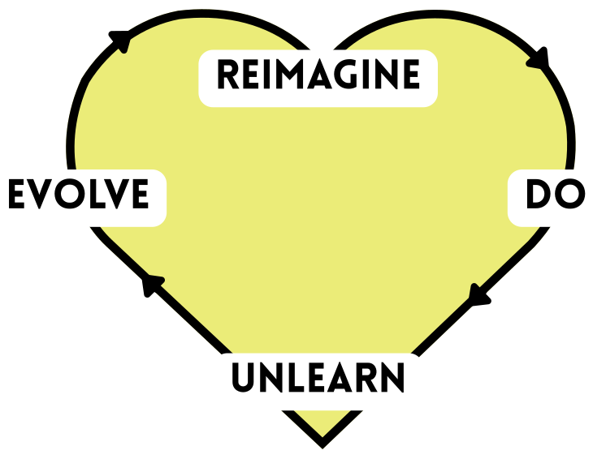
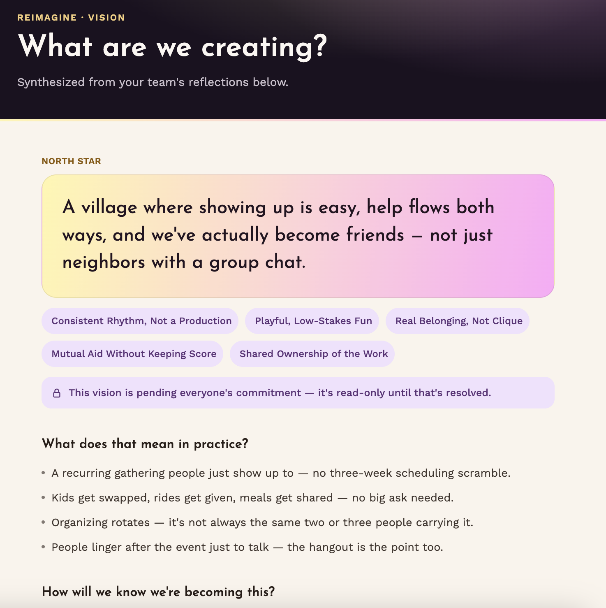
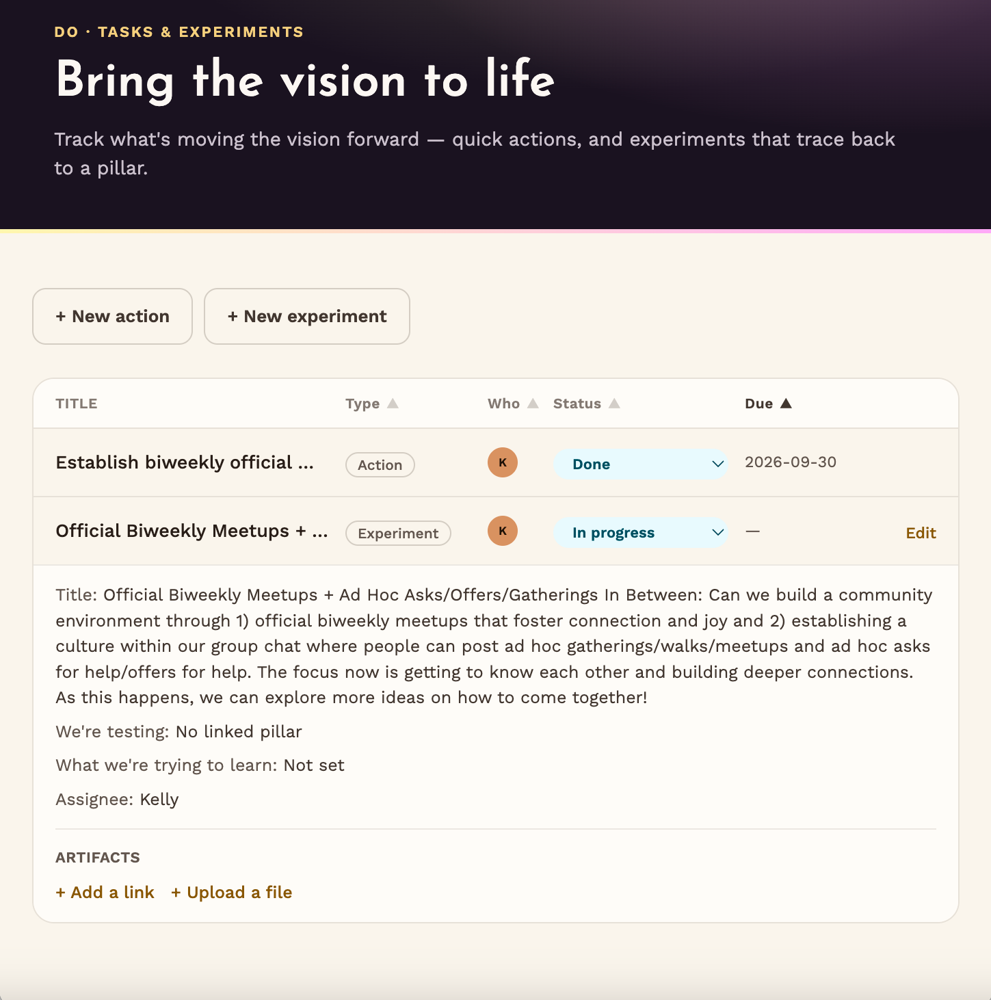
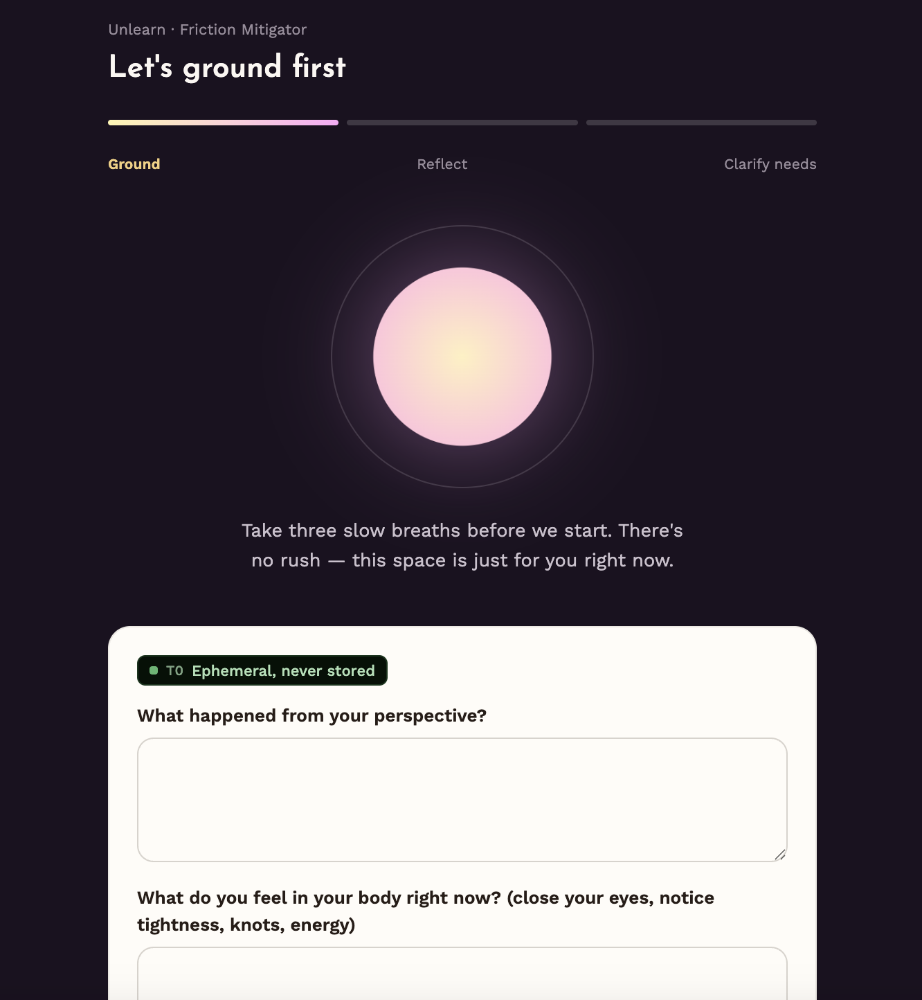
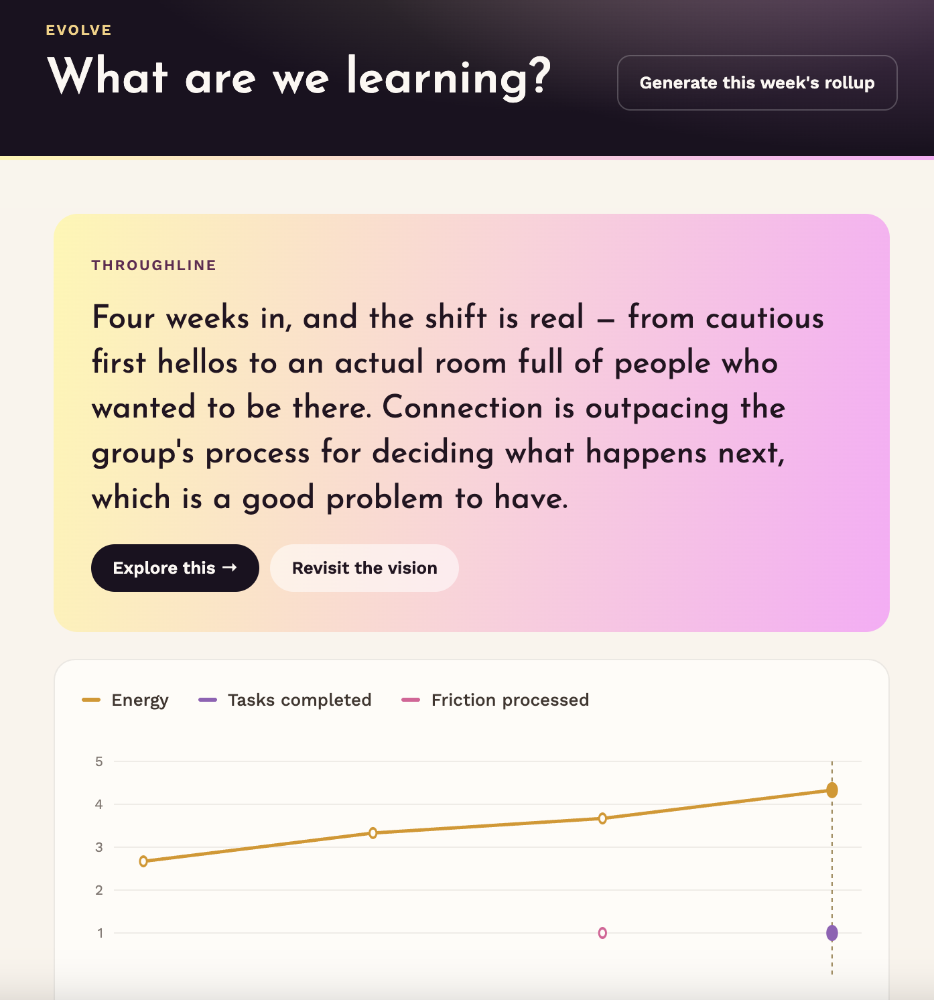

Though this pattern (Reimagine, Do, Unlearn, Evolve) emerged from individual practice, the same mechanics appear to scale to groups, offering a path for shifting collective consciousness from a fear-based to an unconditional love-based mode of operating.
The heart-centered pattern that emerged
What happens when the mechanics of individual transformation become the operating system for how a group creates and evolves together?
This work proposes that individual and collective transformation follow a similar pattern: moving from a more fear-based way of operating (contraction and protection) toward a more unconditional love-based way of operating (connection, creativity, and adaptive action) through a repeating pattern of Reimagine > Do > Unlearn > Evolve
A compelling vision provides sufficient motivational pull to keep us moving through uncertainty, identity destabilization, and emotional processing. As we act toward the vision, friction reveals what needs to change. Processing that friction creates capacity for new ways of seeing, acting and creating. The cycle repeats.

Connect, through presence and unconditional love, with what feels meaningful, alive, and worth creating.
Act from the emerging identity before certainty arrives. Experiment, commit, build something.
Meet uncertainty, limiting beliefs and grief as information. Emotional and somatic processing, regulation.
Integrate the learning, celebrate, and discover the next version of the vision. Creativity as integration.
The same cycle helps a team foster collective intelligence and innovation
When people can connect around what matters, act without needing certainty, surface friction safely, and learn together, the group becomes capable of seeing and creating more than any individual could alone.




The Empire of Light platform makes this cycle visible and repeatable.
Five years of vision, action, friction and creation (2022–2026)
One participant’s record, kept continuously. Each lane is one phase of the cycle; the phases overlap and recur rather than completing in order. Personal entries are shown by category only.